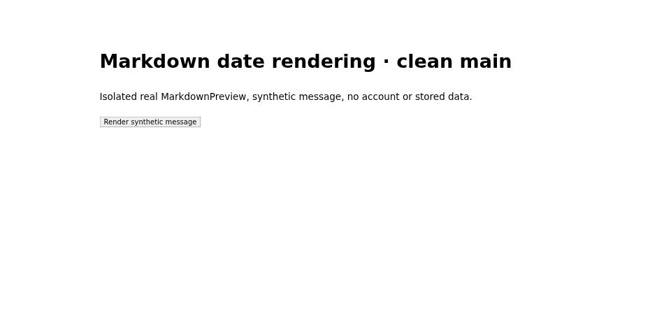
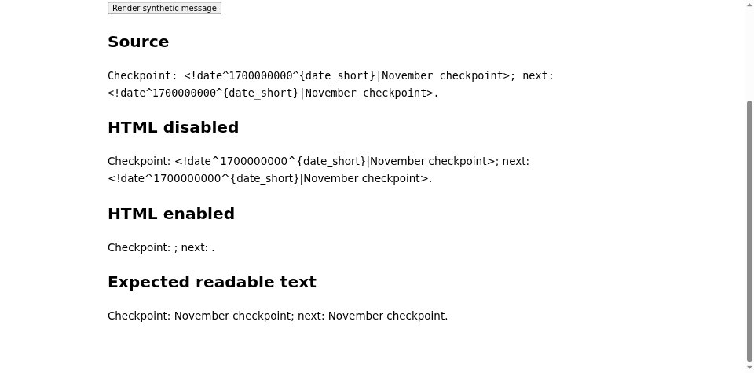
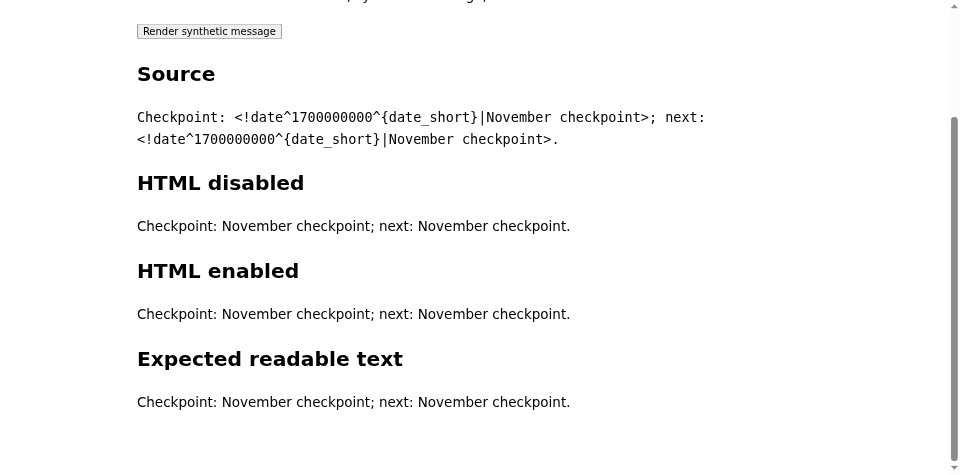

#7947 · Markdown drops Slack date fallback text
2026-11-21 · investigation started 2026-11-20 · trusted main 48e142cd1bac6ff630aea3e485d683de3ccce776
Verdict: REPRODUCED · Root-cause confidence: high
1. TL;DR
A Slack date embedded in ordinary Markdown disappears when the HTML-enabled renderer is used. The source is intact, but the date syntax is mistaken for an HTML declaration and discarded as a comment. A direct test and a real Chromium fixture both reproduce this on clean main. One important correction: with HTML disabled, the renderer shows the raw token rather than removing it. A contained fix can display the token's fallback text without calculating dates or relaxing HTML sanitization.
2. Claims vs findings
| Claim | Finding | Evidence |
|---|---|---|
| Dates disappear in HTML-enabled messages. | Verified | Two clean checkouts and Chromium render only “Checkpoint: ; next: .”. |
| Another HTML tag is required to trigger the problem. | Not required | The token alone contains < and enters the HTML path when allowHtml is true. |
| HTML-disabled Markdown also drops the token. | Refuted on current main | Both tests and Chromium preserve the full raw token when allowHtml=false. |
| The HTML parser treats the token as a bogus comment. | Verified | The installed hast-util-raw parser returns a comment node containing the date payload. |
| Installed desktop versions and affected-message counts. | Unverified | No access to or inspection of reporter storage; no macOS desktop reproduction. |
3. Environment
- Linux x86_64; Node v22.19.0; pnpm 9.15.0; Chromium 156.0.8078.79.
- Trusted source: get-bb/bb origin/main at 48e142cd1bac6ff630aea3e485d683de3ccce776. Two separate clean clones, named source and verify, with only an agent-authored regression added for baseline runs.
- No provider, account, production app, or persisted data used. Isolated Vite fixtures used loopback ports 49457 and 49458. Each checkout has its own build and dependency links.
- Frozen install succeeded. The first full build hit missing generated SDK types; the repository-prescribed build:types task resolved that, then all 73 build tasks passed.
4. Minimal reproduction
- Clone the public repository, check out the trusted base above, and run:
pnpm install --frozen-lockfile --prefer-offline pnpm exec turbo run build:types --filter=@get-bb/plugin-sdk pnpm exec turbo run build
- Save the independently authored regression test shown below at apps/app/src/components/ui/markdown-slack-dates.test.tsx.
- Run:
pnpm exec turbo run test --filter=@bb/app -- src/components/ui/markdown-slack-dates.test.tsx
HTML enabled, expected:
Checkpoint: November checkpoint; next: November checkpoint.
HTML enabled, actual:
Checkpoint: ; next: .
HTML disabled, actual:
Checkpoint: <!date^1700000000^{date_short}|November checkpoint>; next: <!date^1700000000^{date_short}|November checkpoint>.
Baseline result in each checkout: 3 failed, 1 passed.
The control verifies that inline and fenced code retain their literal token.
Regression source
// @vitest-environment jsdom
import { cleanup, render } from "@testing-library/react";
import { afterEach, describe, expect, it } from "vitest";
import { LazyMarkdownHtml } from "./lazy-markdown-html";
import { MarkdownPreview } from "./markdown-preview";
await LazyMarkdownHtml.preload();
afterEach(cleanup);
const dateToken = "<!date^1700000000^{date_short}|November checkpoint>";
describe("Slack date fallbacks", () => {
it.each([false, true])("preserves dates with allowHtml=%s", (allowHtml) => {
const { container } = render(
<MarkdownPreview
allowHtml={allowHtml}
content={`Checkpoint: ${dateToken}; next: ${dateToken}.`}
/>,
);
expect(container.textContent).toBe(
"Checkpoint: November checkpoint; next: November checkpoint.",
);
});
it("preserves dates alongside sanitized HTML", () => {
const { container } = render(
<MarkdownPreview
allowHtml
content={`Checkpoint: ${dateToken}, <b>ready</b>.`}
/>,
);
expect(container.textContent).toBe("Checkpoint: November checkpoint, ready.");
expect(container.querySelector("b")?.textContent).toBe("ready");
});
it("leaves tokens inside inline and fenced code unchanged", () => {
const { container } = render(
<MarkdownPreview
allowHtml
content={`\`${dateToken}\`\n\n\`\`\`text\n${dateToken}\n\`\`\``}
/>,
);
expect(Array.from(container.querySelectorAll("code"), (code) => code.textContent))
.toEqual([dateToken, dateToken]);
});
});
Browser verification
Copy the HTML fixture shown next to apps/app/slopcop-7947.html and the React fixture to apps/app/src/test/slopcop-7947.tsx. Start pnpm --filter @bb/app exec vite --host 127.0.0.1 --port 49458, open /slopcop-7947.html, then click Render synthetic message. This mounts the actual MarkdownPreview component, not a hand-built rendering.
Browser fixture sources
apps/app/slopcop-7947.html
<!doctype html> <html lang="en"><head><meta charset="utf-8"><title>Markdown date regression</title></head> <body style="font:18px/1.6 system-ui;max-width:900px;margin:40px auto;padding:24px"> <h1>Markdown date rendering · clean main</h1> <p>Isolated real MarkdownPreview, synthetic message, no account or stored data.</p> <button id="render">Render synthetic message</button> <div id="root"></div> <script type="module" src="/src/test/slopcop-7947.tsx"></script> </body></html>
apps/app/src/test/slopcop-7947.tsx
import { createRoot } from "react-dom/client";
import { MarkdownPreview } from "../components/ui/markdown-preview";
import { LazyMarkdownHtml } from "../components/ui/lazy-markdown-html";
await LazyMarkdownHtml.preload();
const token = "<!date^1700000000^{date_short}|November checkpoint>";
const content = `Checkpoint: ${token}; next: ${token}.`;
const root = createRoot(document.getElementById("root")!);
document.getElementById("render")!.addEventListener("click", () => {
root.render(<>
<h2>Source</h2><pre style={{whiteSpace:"pre-wrap"}}>{content}</pre>
<h2>HTML disabled</h2><section id="plain"><MarkdownPreview content={content} /></section>
<h2>HTML enabled</h2><section id="html"><MarkdownPreview allowHtml content={content} /></section>
<h2>Expected readable text</h2><p>Checkpoint: November checkpoint; next: November checkpoint.</p>
</>);
});


5. Root cause
Slack date syntax becomes a raw HTML node; the HTML parser turns it into a bogus comment and sanitization removes it. MarkdownPreview selects the HTML implementation only when allowHtml and a less-than character are present; HTML is not enabled merely because such a character occurs.
- HTML-path predicate:
allowHtml && content.includes("<"). - Shared remark plugin list has no Slack-date handling.
- Renderer selection chooses LazyMarkdownHtml versus ReactMarkdown.
- HTML pipeline runs rehypeRaw before sanitizeMarkdownHtml.
Raw parser output for the synthetic token:
{ "type": "root", "children": [
{ "type": "comment", "value": "date^1700000000^{date_short}|November checkpoint" }
] }
The sanitizer then removes comments. The non-HTML renderer instead prints raw HTML nodes as text. Therefore the general claim that both paths drop the token is not supported.
6. Proposed fix and verified patch
Convert complete Slack date HTML nodes into plain text using their authored fallback before HTML parsing; leave code, surrounding HTML, comments, attributes, and sanitization unchanged. The patch handles complete date tokens parsed as HTML nodes in ordinary Markdown and uses plain text nodes so fallback text is not reinterpreted as Markdown or HTML. It intentionally does not rewrite tokens embedded inside an opaque HTML block, HTML attribute, script, or comment. It does not introduce timezone formatting, dependencies, protocols, configuration, or stored-data changes.
Additional controls cover standalone tokens, literal code, HTML attributes, comments, and script removal. An initial broader raw-HTML rewrite was rejected by these controls and narrowed before publication.

7. Linked PR metadata and static review
#7948 is closed and unmerged. Its diff adds a remark conversion that derives UTC output from timestamps, which addresses the inline-node mechanism but chooses formatting rather than preserving fallback text. No branch or code from that PR was checked out or executed; no runtime or merge-readiness verdict is claimed. The independently authored patch here was designed before reading that diff. No open linked PR was found before preparing the fix.
8. Related issues
A bounded repository search for Markdown-related issues did not identify another issue with this same missing-date mechanism. This is not an exhaustive duplicate guarantee.
9. Verification
The same agent repeated the regression in a second clean checkout, verify, at the exact trusted base. It had its own frozen install and generated dependencies. Production renderer files were unchanged. Running pnpm exec turbo run test --filter=@bb/app -- src/components/ui/markdown-slack-dates.test.tsx again produced the same three expected failures and one passing code control; the actual HTML-enabled output matched the first run byte-for-byte. Chromium then mounted the same real component in this second checkout at a distinct port. This is a repeated clean run by the same agent, not an independent review.
Correction from verification: HTML-disabled content is literal, not absent. The report and root-cause explanation reflect this. macOS desktop behavior, historical installed-build behavior, and production-message counts remain unverified.
10. Appendix
Raw logs and reproduction files are retained only in the local report work directory; the public report embeds the repeatable sources and redacted result excerpts.
first-run.log @bb/app:test: @bb/app:test: ⎯⎯⎯⎯⎯⎯⎯⎯⎯⎯⎯⎯⎯⎯⎯⎯⎯⎯⎯⎯⎯⎯⎯⎯[3/3]⎯ @bb/app:test: @bb/app:test: @bb/app:test: Test Files 1 failed (1) @bb/app:test: Tests 3 failed | 1 passed (4) @bb/app:test: Start at 23:51:46 @bb/app:test: Duration 11.56s (transform 8.54s, setup 296ms, import 9.85s, tests 100ms, environment 865ms) @bb/app:test: @bb/app:test: ELIFECYCLE Test failed. See above for more details. @bb/app#test: ERROR command (<first-checkout>/apps/app) /usr/local/bin/pnpm run test src/components/ui/markdown-slack-dates.test.tsx exited (1) Tasks: 6 successful, 7 total Cached: 5 cached, 7 total Time: 14.456s Failed: @bb/app#test ERROR run failed: command exited (1) second-run.log @bb/app:test: @bb/app:test: ⎯⎯⎯⎯⎯⎯⎯⎯⎯⎯⎯⎯⎯⎯⎯⎯⎯⎯⎯⎯⎯⎯⎯⎯[3/3]⎯ @bb/app:test: @bb/app:test: @bb/app:test: Test Files 1 failed (1) @bb/app:test: Tests 3 failed | 1 passed (4) @bb/app:test: Start at 23:52:30 @bb/app:test: Duration 10.28s (transform 7.80s, setup 248ms, import 8.76s, tests 99ms, environment 725ms) @bb/app:test: @bb/app:test: ELIFECYCLE Test failed. See above for more details. @bb/app#test: ERROR command (<second-checkout>/apps/app) /usr/local/bin/pnpm run test src/components/ui/markdown-slack-dates.test.tsx exited (1) Tasks: 6 successful, 7 total Cached: 0 cached, 7 total Time: 14.92s Failed: @bb/app#test ERROR run failed: command exited (1) fixed-markdown-suite.log @bb/app:test: ✓ matches a single document for every prefix of seeded block sequences 2394ms @bb/app:test: ✓ matches single documents for every streamed chunk of the 'long-response' fixture 1894ms @bb/app:test: ✓ matches single documents for every streamed chunk of the 'incident-writeup' fixture 969ms @bb/app:test: ✓ matches single documents for every streamed chunk of the 'refactor-plan' fixture 749ms @bb/app:test: ✓ matches single documents for every streamed chunk of the 'api-design' fixture 1318ms @bb/app:test: ✓ matches single documents for every streamed chunk of the 'data-analysis' fixture 1846ms @bb/app:test: ✓ |@bb/app:isolated| src/components/ui/markdown-surface-contract.test.tsx (9 tests) 378ms @bb/app:test: @bb/app:test: Test Files 21 passed (21) @bb/app:test: Tests 370 passed (370) @bb/app:test: Start at 00:00:09 @bb/app:test: Duration 32.29s (transform 172.23s, setup 17.80s, import 260.57s, tests 34.33s, environment 29.27s) @bb/app:test: Tasks: 7 successful, 7 total Cached: 5 cached, 7 total Time: 35.153s fixed-checks.log @bb/templates:generate:templates: > node ./scripts/generate-templates.mjs @bb/templates:generate:templates: @bb/app:typecheck: cache miss, executing 8432bed7ba880eae @bb/app:lint: @bb/app:lint: > @bb/app@0.0.1 lint <first-checkout>/apps/app @bb/app:lint: > oxlint src vite.config.ts vite.dev.config.ts vite.profiling.config.ts vite-bundle-stats.ts vite-font-preload.ts vite-split-prefetch.ts vite-forkable-plugin-paths.ts vite-shared-ui-seam.ts vite-react-compiler.ts vite-journey-chunks.ts vite-plugin-zod-runtime.ts @bb/app:lint: @bb/app:typecheck: @bb/app:typecheck: > @bb/app@0.0.1 typecheck <first-checkout>/apps/app @bb/app:typecheck: > tsrs --noEmit && tsrs --noEmit -p tsconfig.node.json @bb/app:typecheck: @bb/app:lint: Found 0 warnings and 0 errors. @bb/app:lint: Finished in 1.2s on 1918 files with 24 rules using 20 threads. Tasks: 7 successful, 7 total Cached: 5 cached, 7 total Time: 2.273s
Investigation commands additionally included git fetch origin main, git log on the affected renderer paths, GitHub metadata reads for classification and linked PRs, oxfmt on changed files, and git diff --check. Later trusted main commits were checked and did not change the affected renderer. Issue content was treated only as untrusted claims; no issue-provided command, test, patch, linked branch, external attachment, or production record was executed or accessed.
> AGENT GENERATED